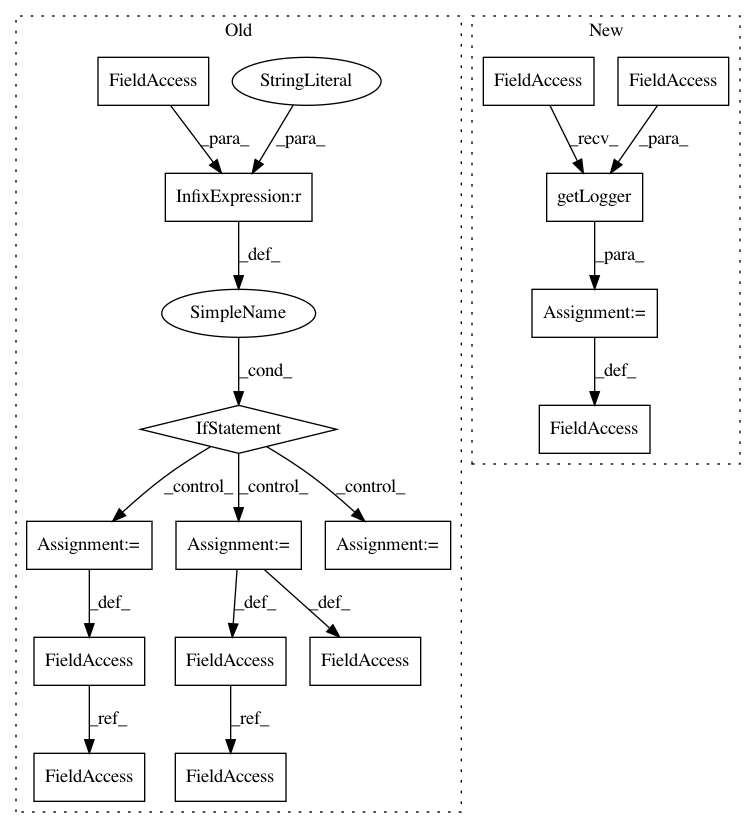

086465c96176a82b2dd3f3d378c8de8af8811905,solutions/set_expansion/expand_server.py,,,#,56
Before Change
print("done")
if __name__ == "__main__":
parser = argparse.ArgumentParser(prog="expand_server.py")
parser.add_argument("model_path", metavar="model_path", type=validate_existing_filepath,
help="a path to the w2v model file")
parser.add_argument("--host", type=str, default="localhost",
help="set port for the server", action=check_size(1, 20))
parser.add_argument("--port", type=int, default=1234,
help="set port for the server", action=check_size(0, 65535))
args = parser.parse_args()
port = args.port
model_path = args.model_path
print("loading model")
se = set_expand.SetExpand(model_path)
print("loading server")
HOST, PORT = args.host, port
server = socketserver.TCPServer((HOST, PORT), MyTCPHandler)
print("server loaded")
server.serve_forever()
After Change
from nlp_architect.utils.io import validate_existing_filepath, check_size
logging.basicConfig(stream=sys.stdout, level=logging.INFO)
logger = logging.getLogger(__name__)
class MyTCPHandler(socketserver.BaseRequestHandler):
In pattern: SUPERPATTERN
Frequency: 3
Non-data size: 16
Instances
Project Name: NervanaSystems/nlp-architect
Commit Name: 086465c96176a82b2dd3f3d378c8de8af8811905
Time: 2018-07-18
Author: shira.guskin@intel.com
File Name: solutions/set_expansion/expand_server.py
Class Name:
Method Name:
Project Name: biolab/orange3
Commit Name: fd19d9e75464b5a07d3fa6f937c2017791d830b2
Time: 2017-04-21
Author: jerneju@gmail.com
File Name: Orange/canvas/report/owreport.py
Class Name:
Method Name:
Project Name: ilastik/ilastik
Commit Name: 330f20585ccfd84bc46d0d3eaf9db858513c0a3e
Time: 2015-02-13
Author: buwen@stud.uni-heidelberg.de
File Name: ilastik/widgets/ipcServerInfoWidget.py
Class Name:
Method Name: